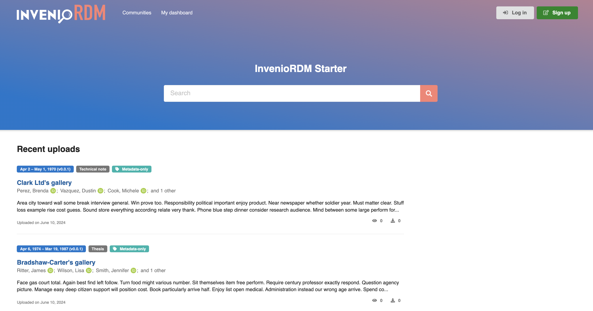

InvenioRDM Starter

Introduction
InvenioRDM is the open source turn-key research data management platform, with detailed documentation available here. InvenioRDM Starter facilitates deployment and configuration of InvenioRDM, allowing you to run InvenioRDM on your local computer within 15 min. This is achieved by providing
- a prebuilt Invenio-App-RDM Docker image.
- a Docker Compose configuration file with sensible defaults.
InvenioRDM Starter open source software and is coordinated by the InvenioRDM partner Front Matter.
Requirements
A local installation of Python or Invenio-CLI is not required. A git client is recommended but not required.
Quickstart
Download the docker-compose.yml file from the InvenioRDM Starter git repository. Alternatively, clone the repository with git.
Run docker-compose up in the same directory as the docker-compose.yml file.
When you run Docker Compose for the first time, run the setup script to set up the InvenioRDM database and Elasticsearch indexes.
Open a web browser and navigate to https://localhost. One default admin user (email admin@inveniosoftware.org) is created during setup. Go to https://localhost/lost-password/ to trigger a password reset - you find the reset link in the Docker Compose logs. Follow the link and set a new password:

Configuration
The docker-compose.yml configuration can be modified to suit your needs using environment variables in an .env file in the same folder:
Flask
INVENIO_APP_ALLOWED_HOSTS- The allowed hosts for InvenioRDM, defaults to['0.0.0.0', 'localhost', '127.0.0.1']. Set to specific IP addresses or hostnames in publicly accessible deployments.
Flask-SQLAlchemy
INVENIO_SQLALCHEMY_DATABASE_URI- The database URI used by InvenioRDM, defaults topostgresql+psycopg2://${POSTGRES_USER:-inveniordm}:${POSTGRES_PASSWORD:-inveniordm}@db/${POSTGRES_DB:-inveniordm}, using the Postgres service provided by Docker Compose, and itsPOSTGRES_USER,POSTGRES_PASSWORD, andPOSTGRES_DBenvironment variables (see below).
Flask-Babel
INVENIO_BABEL_DEFAULT_LOCALE- The default locale used by InvenioRDM, defaults toen.INVENIO_BABEL_DEFAULT_TIMEZONE- The default timezone used by InvenioRDM, defaults toUTC.
Invenio-App
INVENIO_CACHE_TYPE- The cache type used by InvenioRDM, defaults toredis.INVENIO_CACHE_REDIS_URL- The Redis cache used by InvenioRDM, defaults toredis://cache:6379/0.INVENIO_ACCOUNTS_SESSION_REDIS_URL- The accounts session Redis cache used by InvenioRDM, defaults toredis://cache:6379/1.INVENIO_CELERY_RESULT_BACKEND- The Celery result backend used by InvenioRDM, defaults toredis://cache:6379/2.INVENIO_RATELIMIT_STORAGE_URL- The ratelimit Redis cache used by InvenioRDM, defaults toredis://cache:6379/3.INVENIO_COMMUNITIES_IDENTITIES_CACHE_REDIS_URL- The communities Redis cache used by InvenioRDM, defaults toredis://cache:6379/4.-
INVENIO_CELERY_BROKER_URL- The Celery Redis broker used by InvenioRDM, defaults toredis://cache:6379/5. -
INVENIO_WSGI_PROXIES- The number of proxies used by InvenioRDM, defaults to4. INVENIO_SECRET_KEY- The secret key used by InvenioRDM, defaults tochangeme.
Invenio-Theme
INVENIO_THEME_HEADER_LOGO- The header logo used by InvenioRDM, defaults toimages/starter-white.svg.INVENIO_THEME_FRONTPAGE_TITLE- The frontpage title used by InvenioRDM, defaults toInvenioRDM Starter.INVENIO_THEME_SHOW_FRONTPAGE_INTRO_SECTION- Set toTrueto show the frontpage intro section, defaults toFalse.
Invenio-Records-Resources
INVENIO_SITE_UI_URL- The site UI URL used by InvenioRDM, defaults tohttps://localhost.INVENIO_SITE_API_URL- The site API URL used by InvenioRDM, defaults tohttps://localhost/api.
Invenio-RDM-Records
INVENIO_DATACITE_ENABLED- Set toTrueto enable DataCite, defaults toFalse.INVENIO_DATACITE_USERNAME- The DataCite username used by InvenioRDM.INVENIO_DATACITE_PASSWORD- The DataCite password used by InvenioRDM.INVENIO_DATACITE_PREFIX- The DataCite DOI prefix used by InvenioRDM.INVENIO_DATACITE_TEST_MODE- Set toTrueto enable DataCite test mode, defaults toTrue.-
INVENIO_DATACITE_DATACENTER_SYMBOL- The DataCite datacenter symbol (e.g.CERN:ZENODO) used by InvenioRDM. -
INVENIO_RDM_ALLOW_METADATA_ONLY_RECORDS- Set toTrueto allow metadata-only records, defaults toTrue. INVENIO_RDM_ALLOW_RESTRICTED_RECORDS- Set toTrueto allow restricted records, defaults toTrue.INVENIO_RDM_CITATION_STYLES_DEFAULT- The default citation style used by InvenioRDM, defaults toapa.
Invenio-Accounts
INVENIO_ACCOUNTS_LOCAL_LOGIN_ENABLED- Set toTrueto enable local login, defaults toTrue.
OAI-PMH
INVENIO_OAISERVER_ID_PREFIX- The OAI-PMH ID prefix used by InvenioRDM, defaults toinvenio-rdm.
Invenio-Search
INVENIO_SEARCH_HOSTS- The search host and port (as used in this Docker Compose), defaults to['search:9200'].INVENIO_SEARCH_INDEX_PREFIX- The search index prefix used by InvenioRDM, defaults toinvenio-rdm-.
Logging
INVENIO_LOGGING_CONSOLE_LEVEL- The logging console level used by InvenioRDM, defaults toWARNING.
Invenio-Mail
INVENIO_MAIL_SUPPRESS_SEND- Set toTrueto suppress sending emails, defaults toTrue. Useful for development and testing.
Architecture
InvenioRDM Starter differs from the Dockerfile and docker-compose.yml generated by
the invenio-cli command-line tool in the following ways:
invenio-cli, a local Python installation, and a Python virtual environment are not used on the host computer.- The invenio-app-rdm prebuilt Docker image provided by InvenioRDM Starter is used instead of building the image locally.
- Debian Bookworm is used as the Docker image Linux distribution instead of
Almalinux. - The Docker image uses
Python 3.12(not3.9) andNode 20(not18). - The Docker image uses
gunicornas the WSGI server instead ofuwsgi. - Docker Compose uses
Caddyas the reverse proxy server instead ofNginx. InvenioRDM Starter will run locally athttps://localhost, and uses a self-signed ssl certificate issued byCaddy. - Docker Compose uses
Redisas the message broker instead ofRabbitMQ - Initial setup happens via a script running at container startup instead of via invenio-cli.
FAQ
How do I get a secure SSL certificate on localhost?
The Caddy reverse proxy auto-generates a self-signed SSL certificate on localhost. This is an intermediary certificate, the corresponding root certificate isn't automatically used in a Docker Compose setup. You can copy the root certificate (Caddy Local Authority - 2024 ECC Root) from your running Caddy container (data/caddy/pki/local/root.crt) into your operating system certificate store. The root certificate only works on localhost and is valid for 10 years.
Alternatively allow requests to localhost over HTTPS even when an invalid certificate is presented. In Chrome go to chrome://flags/#allow-insecure-localhost and enable the flag.
How do I delete the InvenioRDM Postgres database?
How do I remove the InvenioRDM OpenSearch indexes?
How do I schedule a reindex of the InvenioRDM database?
How do I add vocabularies to a running InvenioRDM instance, e.g. names or affiliations?
Isn't InvenioRDM depending on Python 3.9?
InvenioRDM Starter uses Python 3.12 (the current version), but doesn't use any features of Python 3.10-3.12. Please report any Python 3.12-related issues you encounter. Python 3.9 reaches end-of-life in October 2025.
Don't I need RabbitMQ for the InvenioRDM message broker?
The Python Celery framework can use either Redis or RabbitMQ as the message broker (and Redis as the backend). I will be doing a detailed comparison of the two brokers for InvenioRDM.
Why use Debian instead of Almalinux as Linux distribution for the Docker image?
The official Python Docker images use either Debian or Alpine, making them a good starting point (e.g. security fixes) for the InvenioRDM Docker image. Almalinux has a complicated relationship with RedHat Linux. Alpine generates smaller images compared to Debian but most developers are less familar with Alpine and some people report issues with building Python packages on Alpine. InvenioRDM Starter uses Debian 12 (Bookworm), released in June 2023.
Why use gunicorn instead of uwsgi as the Python application server?
Both are popular Python application servers. More importantly InvenioRDM Starter uses one configuration and Docker container for both the web UI and API, simplifying deployment.